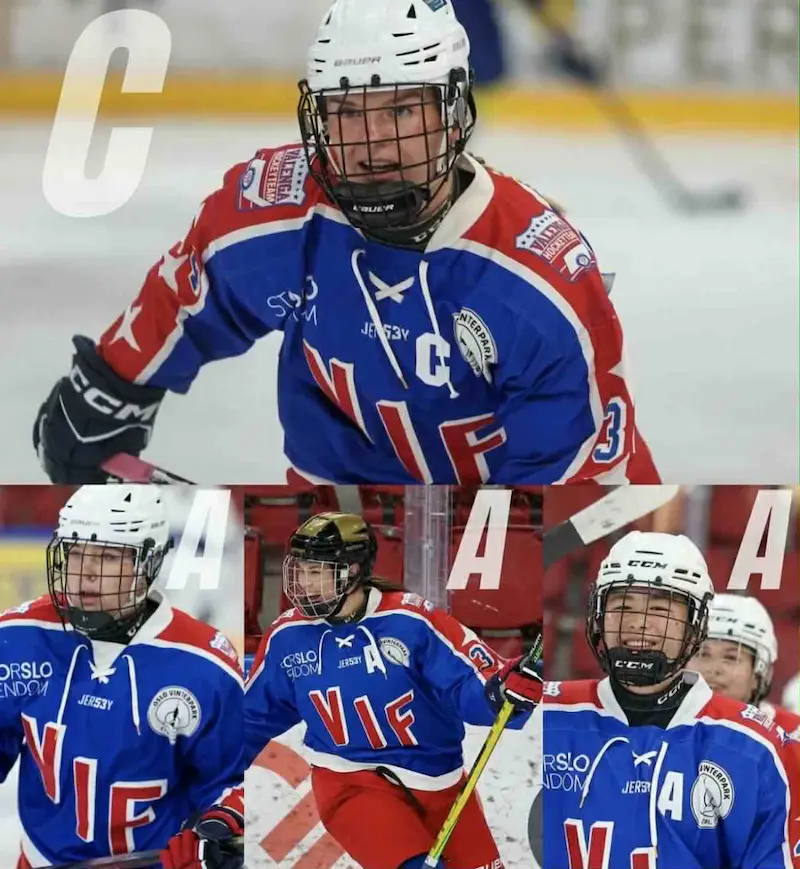
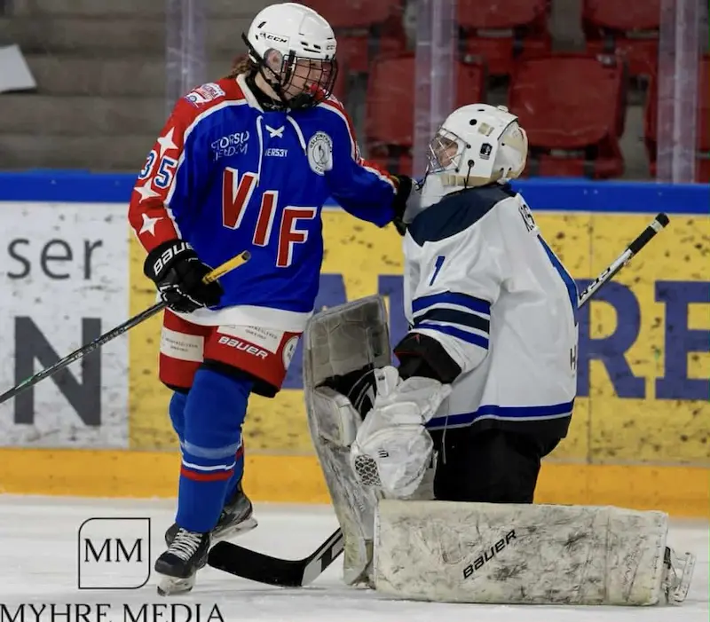
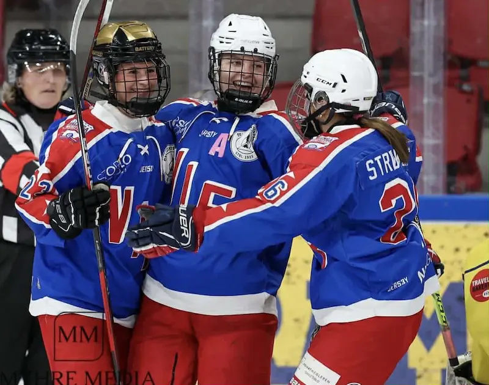

SISTE NYTT FRA KLUBBEN
ÅRETS KAPTEINSTEAM
Årets kapteinsteam består av Kaptein Tiril Arntzen. A1 Agnes Hagen, A2 Therese Strømstad og A3 Sandra Johansen.
STATUS ETTER DE FØRSTE KAMPENE
Sesongen startet med en god oppkjøring, der vi fikk med oss nesten alle poengene som varv mulig. Når selve sesongen startet ble det litt tyngre, og poeng vi hadde hentet i oppkjøringen, fikk vi ikke med oss når serierunden startet. Vi er heldigvis tidlig i sesongen og klare for å hente alle poengene som er å hente, da i er et lag som kjemper i toppen.
VEIEN VIDERE
Vi gjør oss klare for 3 x Tromsø neste helg, hvor 9/9 poeng forventes å være med hjem. Ikke lenge etter venter to harde kamper mot Furuset, og top harde mot Lillehammer, før Stavanger står på planen. Vi vet at dette blir tøffe kamper, mem også spennende kamper da nivået og tempraturen er høy.